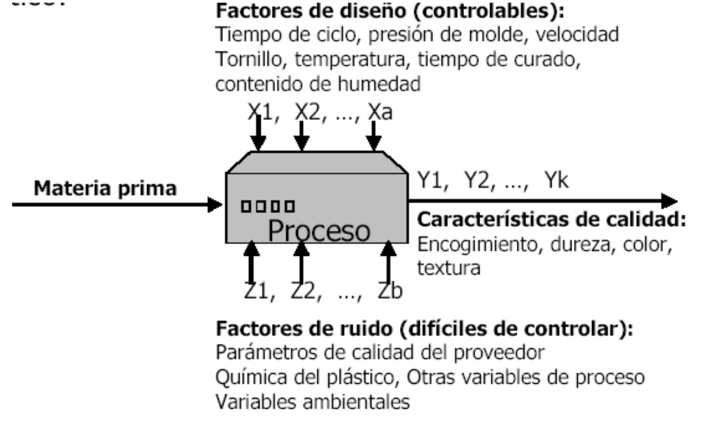

Varianza
Objetivos del diseño experimental
Planear pruebas experimentales, de forma que los datos generados se analicen estadísticamente para obtener conclusiones válidas y objetivas sobre un proceso.
Utilizar técnicas estadísticas para manipular un proceso con el fin de obtener la mayor información posible.
Determinar qué pruebas y cómo realizarlas, para extraer conclusiones y tomar decisiones sobre un proceso.
Aplicaciones del diseño experimental
En la industria
Comparar proveedores del mismo material para elegir el que mejor cumple especificaciones.
Comparar sistemas de medición para verificar si trabajan con la misma precisión y exactitud.
Proponer nueva manera de operar un proceso, variar sus condiciones y hacer cambios para reducir defectos.
Determinar factores o fuentes de variabilidad con impacto en la capacidad del proceso para cumplir requerimientos.
Localizar condiciones de operación para desempeño óptimo del proceso.
Proponer métodos de muestreos efectivos y más económicos.
Reducir tiempo de ciclo del proceso.
Hacer proceso robusto a oscilaciones de variables no controlables.
Apoyar en el diseño o rediseño del producto o proceso.
En la investigación
Validar una hipótesis mediante evidencia objetiva.
Generar conocimiento y aprendizaje de forma eficiente. Dirección del aprendizaje: conocimiento, conjeturas, imaginación, experimentación, análisis y reflexión.
Evaluación y comparación de diseños básicos.
Evaluación de materiales alternativos.
Selección de parámetros del diseño para que el producto tenga un buen funcionamiento en una amplia variedad de condiciones de campo.
Introducción al análisis de varianza

Al iniciar el estudio, el investigador desarrolla una lista de verificación de aspectos:
Objetivos específicos del experimento.
¿Cuáles variables respuesta se van a medir?
Qué factores influyen, cuáles de ellos varían y cuáles permanecen constantes.
¿Cuáles factores serán controlables en el experimento?
¿Qué niveles debe usarse de cada factor?
Procedimientos particulares para realizar las pruebas o medir las características.
Número de repeticiones del experimento.
Recursos y materiales disponibles.
Las preguntas que centran nuestra atención a través del proceso de diseño incluyen:
¿Cuál es mi objetivo?
¿Qué quiero saber?
¿Por qué quiero saberlo?
¿Cómo voy a realizar el experimento?
¿Por que hago el experimento?

Consideraciones prácticas
Las metodologías estadísticas por sí solas no garantizan investigaciones exitosas:
El conocimiento no estadístico es vital: Se requiere buen conocimiento técnico y práctico del proceso.
Reconocer la diferencia entre significancia estadística e importancia práctica: diferencias estadísticas no siempre corresponden a diferencias prácticas de importancia.
Preferir la experimentación secuencial que un experimento único y definitivo: La experimentación secuencial alcanza paulatinamente mayor precisión en los conocimientos y soluciones. Seguir una estrategia bien definida y pensada.
Definiciones del diseño experimental
Experimento
Cambio deliberado en las condiciones de operación de un proceso, con el fin de medir el efecto sobre una o varias propiedades del producto.
Tratamiento
Conjunto de circunstancias creadas para el experimento, en respuesta a la hipótesis de investigación. Entre los ejemplos de tratamientos se encuentran dietas de animales, producción de variedades de cultivos,temperaturas, tipos de suelo y cantidades de nutrientes.
En un estudio comparativo se usan dos o más tratamientos y se comparan sus efectos en el sujeto de estudio.
Unidad experimental
Objeto o sujeto básico expuesto al tratamiento, sobre el cual se obtiene una medición o dato representativo
Una pieza: En el estudio de la resistencia a la tracción de cierta componente
Un lote o grupo de piezas: En el estudio de la proporción de defectuosos en una operación
La unidad experimental expuesta al tratamiento, constituye una réplica del tratamiento.
Las unidades de observación y las experimentales pueden ser claramente distintas
La unidad de observación puede no ser equivalente a la unidad experimental. La primera puede ser una muestra de la última, como muestras individuales de plantas de una parcela.
Ejemplo: Un estudio sencillo de raciones de dieta animal tiene un corral con seis animales asignados a la ración A y otro con seis más asignados a la ración B. Se reúnen datos sobre el aumento de peso. Al final del estudio, se toman de cada animal las medidas necesarias.
Unidad experimental:El corral, porque es la unidad a la que se administró el tratamiento independiente.
Unidades de observación: Los animales en el corral.
Variable respuesta Característica o propiedad medida en cada unidad, cuyos cambios se desean estudiar.
Factores controlables Variables del proceso que se pueden fijar en un valor o nivel de operación, ya que existe el mecanismo para cambiar su nivel. También se les llama variables de entrada, condiciones de proceso, o variables de diseño. Ej. Temperatura, velocidad, presión, concentración, tiempo de aplicación, etc.
Factores no controlables o de ruido Variables que no se pueden controlar durante la operación normal del proceso. Ej. Variables ambientales, usos de un producto por los usuarios, etc.
Factores estudiados Variables cuyos efectos sobre la respuesta se investigan en el experimento: Pueden ser posiblemente controlables o no controlables durante el experimento. Se requiere probarlos en al menos dos niveles. Los factores en principio pueden afectar la media o la variabilidad de la variable respuesta.
Niveles Valores asignados a cada factor de estudio.
Tratamiento o punto de diseño Combinación de niveles de factores
| Niveles de factor A (A1,A2) | Niveles de factor B (B1,B2) | tratamiento |
|---|---|---|
| A1 | B1 | A1B1 |
| A1 | B2 | A1B2 |
| A2 | B1 | A2B1 |
| A2 | B2 | A2B2 |
Error aleatorio
Variabilidad observada que no se puede explicar por los factores estudiados, es debido a “causas comunes o aleatorias”, que generan la “variabilidad inherente del proceso”. Incluye efectos pequeños de factores no estudiados, variabilidad de las mediciones hechas bajo mismas condiciones.
Error experimental
Describe la variación entre las unidades experimentales tratadas de manera idéntica e independiente. Los distintos orígenes del error experimental son:
La variación natural entre unidades experimentales.
La variabilidad en la medición de la respuesta.
La imposibilidad de reproducir las condiciones del tratamiento con exactitud de una unidad a otra.
La interacción de los tratamientos con las unidades experimentales.
Cualquier otro factor externo que influya en las características medidas.
Ejemplo
La imposibilidad de reproducir el tratamiento con exactitud se da cuando las réplicas de los tubos de ensayo se preparan de modo independiente, con la misma mezcla de compuestos, y el peso de los productos químicos obtenidos en cada tubo difiere en 0.1 microgramo (pg). Los procesos en pipetas o básculas no son exactos, por lo tanto, introducen una pequeña variación durante la preparación del tratamiento.

Un importante objetivo de los cálculos estadísticos es lograr una estimación de la varianza del error experimental. En su forma más simple, el error experimental es la varianza en unidades de las observaciones del experimento, cuando las diferencias entre éstas se pueden atribuir sólo al error experimental.
NOTA No se deben dejar variar libremente a factores que pueden ser influyentes sobre la respuesta: Principio de bloqueo. Ejemplo Factores y variables en la fabricación de un envase plástico:

Estudios por observaciones comparativas
Son aquellos para los que desearíamos hacer un experimento, pero no es posible por razones económicas, prácticas o éticas.
El investigador tiene en mente condiciones o tratamientos que tienen efectos causales en sujetos para los que no es posible efectuar experimentos hasta obtener respuestas. Los investigadores de las ciencias sociales, ecología, vida silvestre, vida marina y otros recursos naturales, a menudo han de llevar a cabo estudios por observación en vez de la experimentación directa.
Ejemplo Considerando un estudio para comparar la severidad de las lesiones por accidentes automovilísticos con y sin el cinturón de seguridad puesto; sería clara la falta de ética si se asignara al azar un tratamiento de personas con cinturón y sin cinturón y después se provocaran colisiones de los autos contra una pared de concreto, tampoco habría quién se prestara para esto. En su lugar, los investigadores se apoyan en los datos de lesiones en los accidentes y comparan los datos de cinturón puesto y sin cinturón.

Hipótesis de investigación
Establece un conjunto de circunstancias y sus consecuencias. Los tratamientos son una creación de las circunstancias para el experimento. Así, es importante identificar los tratamientos con el papel que cada uno tiene en la evaluación de la hipótesis de investigación.
Relación entre los tratamientos y las hipótesis
Cuando se eligen los tratamientos adecuados en respuesta a una hipótesis de investigación, es posible comprender mejor los procesos físicos, químicos biológicos o sociales.
A continuación se presentan tratamientos, usados en el marco de investigaciones reales, generados por hipótesis de investigación:
- Se estudió la cinética de bebida de las abejas productoras de miel a diferentes temperaturas ambientales, para responder a la hipótesis de que la energía requerida al reunir comida para la colonia era independiente de la temperatura.

- La supervivencia de siembras de Euphorbia (género de plantas) atacadas por un patógeno del suelo se determinó para distintos tipos de tratamientos de fungicida, en respuesta a la hipótesis de que no todos los fungicidas tienen la misma eficiencia para controlar tal patógeno.
Tratamiento control
Muchas veces se requieren tratamientos adicionales para evaluar por completo las consecuencias de la hipótesis. Una componente importante de muchos diseños de tratamiento es el tratamiento de control.
El tratamiento de control es un punto necesario para evaluar el efecto de los tratamientos experimentales; existen diversas circunstancias en las que el tratamiento de control es útil y necesario. Un control al que no se da tratamiento revelará las condiciones en las que se efectuó el experimento.
Control local de errores experimentales
Los principales objetivos de la mayoría de los experimentos son las comparaciones claras y exactas entre tratamientos a través de un conjunto apropiado de condiciones.
El control local describe las acciones que emplea un investigador para reducir o controlar el error experimental, incrementar la exactitud de las observaciones y establecer la base de la inferencia de un estudio.
El investigador controla:
- Técnica.
- Selección de unidades experimentales
- Bloquización o aseguramiento de la uniformidad de información en todos los tratamientos.
- Selección del diseño experimental.
- Medición de covariables (son variables relacionadas con la variable respuesta que nos interesa).
Etapas del diseño experimental
Varias preguntas deben resolverse antes de la experimentación:
¿Cuántos tratamientos van a ser estudiados?
¿Cuántas veces observar cada tratamiento (réplicas)?
¿Cuáles son las unidades experimentales?
¿Cómo se aplicarán los tratamientos a las unidades experimentales disponibles y luego observar las respuestas?
¿Puede el diseño resultante ser analizado o se pueden hacer las comparaciones deseadas?
Principios del diseño
1. Aleatorizar para tener inferencias válidas
“la sola aleatorización proporciona estimaciones válidas de la varianza del error” (Fisher, 1926). La aleatorización es la asignación al azar de tratamientos a las unidades experimentales, permitiendo:
La validación del error experimental
Evita sesgos.
Garantiza la independencia de los errores.
2. Bloqueo
Mientras más parecidas sean las unidades experimentales, mejor serán las comparaciones entre los tratamientos.
En la mayoría de los experimentos es imposible seleccionar todas las unidades experimentales idénticas.
La no similaridad entre las unidades experimentales contribuye al ruido.
Los experimentos pueden ser mejorados si agrupamos las unidades experimentales dentro de grupos de unidades cercanamente similares, llamadas unidades homogéneas.
Los tratamientos pueden ser comparados sobre las unidades experimentales similares donde la variación de grupo puede ser considerada para el análisis. Los grupos de unidades similares u homogéneas son denominados bloques.
Objetivo del bloqueo Seleccionar y agrupar el material experimental de modo que el ruido o error experimental en el experimento sea reducido. Así, las unidades experimentales sobre las cuales los tratamientos van a ser comparados deberían ser tan parecidas como sea posible para que la menor diferencia significativa entre dos tratamientos pueda ser detectada.
Control de factores bloque y de ruido
Controles posibles sobre fuentes de variación adicionales a factores de estudio:
Bloqueo activo durante el experimento, lo que implica que el factor de ruido es parte del estudio y aparece explícitamente. En la práctica sólo controlar factores de bloque que se saben son influyentes y económicamente factibles de fijar en distintos niveles: operadores, tipos de producto, lotes, turnos, tipos de material, etc.
Nulificar los efectos al mantenerlos fijos en valor usual durante estudio: Resultados son válidos sólo para nivel seleccionado.
Aplicar aleatorización para nulificar efecto indeseable de factores de ruido: Posible efecto es repartido “equitativamente” en todos los tratamientos, y no se puede medir tal efecto posible. E.j. Variables ambientales, cansancio operadores, calentamiento equipo, variables que en general se mueven solas con el tiempo.
3. Replicar para obtener experimentos válidos
La réplica implica una repetición independiente del experimento básico, cada tratamiento se aplica de manera independiente a dos o más unidades experimentales. Existen diversas razones para hacer réplicas de un experimento, las más notables son:
- Permiten estimar el error experimental
- Ejerce control sobre la varianza del error experimental
- Mejora la precisión de un experimento mediante la reducción de la desviación estándar de una media de tratamiento
- A mayor número de repeticiones mayor precisión
- Aumenta el alcance de la inferencia (I.C. y pruebas de hipótesis.)
ANALISIS DE VARIANZA ANOVA
Herramienta estadística para estudiar la relación entre una variable respuesta y una o más variables explicatorias.
No requiere ningún supuesto acerca de la relación estadística entre la variable respuesta y las predictoras.
No requiere que las variables predictoras sean cuantitativas.
Estructura de un diseño experimental
El diseño experimental comprende:
Elección de la estructura de tratamiento
Elección de la estructura de diseño y el método de aleatorización
ESTRUCTURA DE TRATAMIENTOS
Conjunto de tratamientos que el experimentador ha seleccionado para estudiar y/o comparar.
- Estructura de tratamiento de un sólo factor.
- Estructura de tratamientos factoriales (dos o más factores)
- Estructura de tratamientos \(2^k\) y estructura de tratamientos factoriales fraccionados
ESTRUCTURA DE DISEÑO
Agrupamiento de las unidades experimentales dentro de grupos homogéneos o bloques:
- Diseño completamente aleatorizado
- Diseño bloqueado: - De bloques completos aleatorizados: Cuadrados latinos y grecolatinos - De bloques incompletos
Por lo general las comparaciones se hacen en términos de las medias poblacionales, aunque también es importante la comparación de varianzas y capacidad actual para cumplir ciertas especificaciones. A manera de resumen las estructuras del diseño son
| Diseño | Factores de bloque | Técnicas estadísticas | Modelo estadístico |
|---|---|---|---|
| Completamente aleatorizado | 0 | ANOVA con un solo criterio de clasificación | \(\large Y_{ij}=\mu+\alpha_i+\varepsilon_{ij}\) |
| Bloques completamente aleatorizado | 1 | ANOVA con dos criterios de clasificación | \(\large Y_{ij}=\mu+\alpha_i+\beta_j+\varepsilon_{ij}\) |
| Cuadrado latino | 2 | ANOVA con tres criterios de clasificación | \(\large Y_{ij}=\mu+\alpha_i+\beta_j+\gamma_k +\varepsilon_{ijk}\) |
| Cuadrado greco latino | 3 | ANOVA con cuatro criterios de clasificación | \(\large Y_{ij}=\mu+\alpha_i+\beta_j+\gamma_k+\delta_l +\varepsilon_{ijkl}\) |
Donde:
- Y es la variable respuesta
- \(\large \mu\) es la media global -\(\large \alpha_i\) es el efecto del i-ésimo tratamiento
- \(\large \beta_j, \gamma_k, \delta_l\) efectos de bloques -\(\large \varepsilon\) es el error aleatorio
Diseño Completamente al Azar (DCA)
En este experimento hay igual número de réplicas por tratamiento, con una asignación aleatoria de los tratamientos a las unidades experimentales. El protocolo descrito por Hinkelman y Kempthorne (1994):
En total se tienen N unidades experimentales (UE) homogéneas (N=tr)
con r Unidades experimentales por cada tratamiento t, distribuidas al azar.
Se expresa de la forma: \[\large Y_{ij}=\mu+\alpha_i+\varepsilon_{ij}\]
Donde - \(\large Y_{ij}\) es la Variable aleatoria que representa la respuesta de la j-ésima unidad experimental asignada al i-ésimo tratamiento, con \(i=1, 2,...,n\) y \(j=1, 2, ..., ni\).
\(\large \mu\) denota la respuesta global promedio
\(\large \alpha\) es el efecto del i-ésimo tratamiento sobre el promedio global
Este modelo es conocido como modelo de efectos de tratamientos, bajo los supuestos de que el error es una variable aleatorias que se distribuye: Normal, Independiente, de media cero y Varianza Constante \(\large \sigma^2\), es decir:
\[\large \varepsilon_i \sim N(0,\sigma^2)\]
Por tanto el examen de diferencias entre las medias de tratamiento \(\large \mu_i\) , es equivalente a examinar las diferencias entre los efectos \(\alpha_i\), bajo la restricción lineal
\[\large \sum_{i=1}^n n_i \alpha_i=0\] para una solución única del sistema de ecuaciones de mínimos cuadrados.
Ventajas
Flexibilidad: Cualquier número de tratamientos y cualquier número de réplicas pueden ser usadas, siempre y cuando se tengan suficientes UE homogéneas.
Análisis Estadístico simple: el análisis estadístico es simple ya sea cuando todos los tratamientos tengan igual número de réplicas (balanceado), diferente número de réplicas (desbalanceado) o pérdida de datos, caso en el cual se trata como un análisis desbalanceado.
Máximo número de grados de libertad para el error:dados por la expresión t(r − 1), que corresponden a dos fuentes de variación que son los tratamientos y el error.
Precisión: Es muy preciso si se tienen en cuenta UE homogéneas.
Desventajas
Se puede obtener baja precisión cuando las unidades experimentales no sean muy homogéneas y así ser ineficiente.
Es recomendado cuando gran parte de las UE no respondan al tratamiento o puedan perderse durante el experimento.
Es útil en experimentos en los que el número de UE es limitado, ya que provee el máximo número de grados de libertad del error.
ANOVA PARA EL DISEÑO COMPLETAMENTE ALEATORIZADO (DCA)
- El objetivo es separar la variación total, es decir la variabilidad debida a los tratamientos y al error.
-◼ Cuando los tratamientos no dominan contribuyen igual o menos que el error, se concluye que las medias son iguales
-◼ Cuando los tratamientos predominan “claramente” sobre el error, es cuando se concluye que los tratamientos tienen efecto y las medias son diferentes.
Tabla de entrada de datos
| niveles del factor | ||||
|---|---|---|---|---|
| Réplicas | \(A_1\) | \(A_2\) | … | \(A_a\) |
| 1 | \(Y_{11}\) | \(Y_{21}\) | … | \(Y_{a1}\) |
| 2 | \(Y_{12}\) | \(Y_{22}\) | … | \(Y_{a2}\) |
| . | … | … | … | … |
| . | \(Y_{1n_1}\) | \(Y_{2n_2}\) | … | \(Y_{11}\) |
| . | \(Y_{11}\) | \(Y_{11}\) | … | \(Y_{11}\) |
| Total | \(Y_{1\bullet}\) | \(Y_{2\bullet}\) | … | \(Y_{a\bullet}\) |
| # de réplicas | ||||
| \(\mu\) por tratamiento |
Donde:
\(Y_{i \bullet}=\sum_{j=1}^{ni}Y_{ij}\) es la suma de las observaciones en el nivel o tratamiento i
\(Y_{\bullet \bullet}=\sum_{i=1}^{a}\sum_{j=1}^{n_i}Y_{ij}\) es la suma de todas las observaciones en el experimento
Con estas cantidades se obtienen los siguientes estimadores:
\[\Large \hat {\mu}=\bar{Y}_{\bullet \bullet}=\frac{1}{N}\sum_{i=1}^{a}Y_{i \bullet}\] \[\Large \hat {\mu}_i=\bar{Y}_{i \bullet}=\frac{Y_{i \bullet}}{n_i}\] \[\Large \hat{\alpha_i}=\bar{Y}_{i \bullet}-\bar{Y}_{\bullet \bullet}\] Las respuestas ajustadas para el tratamiento i es:
\[\Large \hat{Y}_{ij}= \bar{Y}_{i \bullet}\] Los residuales del modelo corresponden a
\[\Large \hat \varepsilon_{ij}= Y_{ij}- \bar{Y}_{i \bullet}\]
Las sumas de cuadrados del modelo ANOVA SST=SSA+SSE
- La variabilidad total observada en la respuesta con N-1 grados de libertad está dada por: \[\Large SST=\sum_{i=1}^a \sum_{j=1}^{n_i}(Y_{ij}-\bar{Y}_{\bullet \bullet})^2=\sum_{i=1}^a \sum_{j=1}^{n_i} Y^2_{ij}-N\bar{Y}_{i \bullet}^2 \]
-La variabilidad en la respuesta explicada por el factor A, con a -1 grados de libertad, está dada por:
\[\Large SSA=\sum_{i=1}^a \sum_{j=1}^{n_i}(Y_{i\bullet}-\bar{Y}_{\bullet \bullet})^2=\sum_{i=1}^a n_i\bar{Y^2_{i\bullet}}-N\bar{Y}_{i \bullet}^2 \]
- La variabilidad en la respuesta explicada por la aleatoriedad, con N-a grados de libertad, está dada por
\[\Large SSE=\sum_{i=1}^a \sum_{j=1}^{n_i}(Y_{ij}-\bar{Y}_{i \bullet})^2=SST-SSA\]
La prueba de hipótesis asociada al ANOVA esta dado por:
\(\Large H_0=\mu_1=\mu_2=...=\mu_i\) \(\Large H_1= \mu_1\not=\mu_2 \not =...\not =\mu_i\)
La tabla anova está definida de la forma
| Fuente de variación | Grados de libertad | Suma de cuadrados | cuadrados medios | Estadístico |
|---|---|---|---|---|
| Factor | a-1 | SSA | \(MSA=SSA/(a-1)\) | \(F_0=MSA/MSE\) |
| Error | N-a | SSE | \(MSE=SSE/(N-a)\) | |
| Total | N-1 | SST |
Validación de supuestos del modelo ANOVA
- Normalidad en los errores, el cual se se chequea con la prueba de shapiro y con el gráfico qq plot
\(\Large H_0=\varepsilon_{ij} \sim Normal\)
\(\Large H_1= \varepsilon_{ij}\) no son normales
- Varianza constante se chequea con la prueba de barlett o la de levene, además del grafico de residuales vs los valores ajustados.
\(\Large H_0=\sigma_1^2=\sigma_2^2=...=\sigma_i^2\)
\(\Large H_1= \sigma_1^2\not=\sigma_2^2 \not =...\not =\sigma_i^2\)
- Independencia en los errrores, se cheque con la prueba durbin watson y con el gráfico de residuales
\(\Large H_0=\) los errores son independientes
\(\Large H_1=\) los errores son dependientes
- El ajuste del modelo planteado, realmente las respuestas medias de los tratamientos son adecuadamente descritos por el modelo lineal postulado, este supuesto se chequea mediante el gráfico de residuales estandarizados vs. niveles del factor. Patrones no aleatorios alrededor de la línea cero de este gráfico son indicios de carencia de ajuste.
Para cada problema experimental es posible hacer estimaciones de sus parámetros:
Una estimación de la varianza del error experimental es \(\Large \hat \sigma=MSE\),es muy útil para el análisis siempre que las varianzas de los tratamientos sean homogéneas.
Una estimación puntual de la media global del experimento es $= yY_{} $
Las medias de los tratamientos se estiman a partir de las medias muéstrales o medias de grupos para el tratamiento j−ésimo.
Los efectos de los tratamientos del factor A son las diferencias entre la media general y la media del tratamiento
Ejemplo de un modelo balanceado
Se tienen 4 tratamientos médicos T1, T2, T3, y T4, aplicables a la misma enfermedad, y se desea comparar la efectividad de cada uno de ellos, en el peso.
| Réplicas | \(T_1\) | \(T_2\) | \(T_3\) | \(T_4\) |
|---|---|---|---|---|
| 1 | 41 | 48 | 40 | 40 |
| 2 | 44 | 49 | 50 | 39 |
| 3 | 45 | 49 | 44 | 46 |
| 4 | 43 | 49 | 48 | 46 |
| 5 | 42 | 45 | 50 | 41 |
| Total \(Y_{i\bullet}\) | 215 | 240 | 232 | 212 |
| Medias \(\bar y_{i\bullet}\) | 43 | 48 | 46.4 | 42.2 |
| Varianzas | 2.5 | 3 | 18.8 | 11.3 |
Ejemplo de un modelo desbalanceado
Para comparar 4 dietas D1, D2, D3, y D4, respecto a su influencia en el tiempo de coagulación de la sangre, se seleccionaron 24 animales y cada uno recibió aleatoriamente una de las dietas.
| Réplicas | \(T_1\) | \(T_2\) | \(T_3\) | \(T_4\) |
|---|---|---|---|---|
| 1 | 62 | 63 | 68 | 56 |
| 2 | 60 | 67 | 66 | 62 |
| 3 | 63 | 71 | 71 | 60 |
| 4 | 59 | 64 | 67 | 63 |
| 5 | 65 | 68 | 63 | |
| 6 | 66 | 68 | 64 | |
| 7 | 63 | |||
| 8 | 59 | |||
| Total \(Y_{i\bullet}\) | 215 | 240 | 232 | 212 |
| Medias \(\bar y_{i\bullet}\) | 43 | 48 | 46.4 | |
| Varianzas | 2.5 | 3 | 18.8 | 11.3 |
INFERENCIAS PARA MEDIAS DE TRATAMIENTOS ANOVA UN FACTOR, DCA
Luego de un ANOVA donde se rechazó la hipótesis nula asociada, es necesario determinar cuáles tratamientos son estadísticamente distintos. Para ello, se recurre a diferentes técnicas de comparación de medias de tratamiento:
- Comparaciones entre pares de medias
- Comparaciones múltiples o pruebas de rango múltiple.
- Comparaciones por contrastes
- Comparaciones de tratamientos con un control
Comparación de medias por medio del intervalo tukey
método de comparación de pares de medias que controla la tasa de error experimental, proporciona intervalos de confianza para las diferencias por pares. Este método puede usarse en diseños de bloques completos aleatorizados y diseños de bloques incompletos balanceados. Para un diseño DCA de un solo factor efectos fijos las diferencias absolutas de pares de medias se comparan a un nivel de significancia \(\large \gamma\) con el valor crítico:
\[\Large T_\gamma=\frac{1}{\sqrt 2} q_\gamma (a,gl)\sqrt{MSE (\frac{1}{n_i}+\frac{1}{n_j})} \]
Donde:
$q_(a,gl) $ es el valor crítico del rango estudentizado los cuales se hayan tabulados a son los niveles del factor gl los grados de libertad del MSE. Los pares de medias de tratamientos \(\mu_i\) y \(\mu_j\) difieren significativamente cuando:
\[\Large D=|\bar y_{i\bullet}-\bar y_{\bullet j}|>T_\gamma\]
También pueden construirse los I.C de Tukey para las diferencias de medias. Si el cero no pertenece a tal intervalo entonces las dos medias correspondientes son estadísticamente distintas, el intervalo está dado por
\[\Large \mu_i-\mu_j\quad \epsilon \quad (\bar y_{i\bullet}-\bar y_{\bullet j})\pm \frac{1}{\sqrt 2} q_\gamma (a,gl)\sqrt{MSE (\frac{1}{n_i}+\frac{1}{n_j})} \] #Ejemplo Un administrador compiló datos sobre mejoramientos de la productividad en los últimos tres años para una muestra de firmas productoras de equipos de computación. Las firmas fueron clasificadas de acuerdo a nivel de sus gastos en investigación y desarrollo en los pasados tres años, en bajo, moderado y alto. Los resultados del estudio sobre la mejora de la productividad (mprod, medida en una escala de 0 a 100) se presentan en la tabla anexa. Asumiendo que un modelo de efectos fijos es apropiado:
| obs | 1 | 2 | 3 | 4 | 5 | 6 | 7 | 8 | 9 | 10 | 11 | 12 |
|---|---|---|---|---|---|---|---|---|---|---|---|---|
| Alto | 8.5 | 9.7 | 10.1 | 7.8 | 9.6 | 9.5 | ||||||
| Bajo | 7.6 | 8.2 | 6.8 | 5.8 | 6.9 | 6.6 | 6.3 | 7.7 | 6 | |||
| Medio | 6.7 | 8.1 | 9.4 | 8.6 | 7.8 | 7.7 | 8.9 | 7.9 | 8.3 | 8.7 | 7.1 | 8.4 |
Preguntas
- Plantee un modelo estadístico apropiado para el ANOVA. Identifique sus términos y los supuestos necesarios.
\[\Large Y_{ij}=\mu+\alpha_i+\varepsilon_{ij}\] con \[\Large \varepsilon \sim N(0,\sigma^2)\] i=1,2,3 y j=1,2,3,4,5,…12
\[\sum_{i=1}^3 \alpha_i=0\] Donde
\(Y_{ij}=\)Puntuación obtenida en la escala de productividad i
\(\mu\) Promedio global de la puntuación obtenida
\(\alpha_i\) Efecto fijo sobre la puntuación obtenida del i -ésimo nivel de gastos.
\(\varepsilon_{ij}\) Error aleatorio en el i-ésimo nivel de puntuación, en la j-ésima observación.
Haga un análisis descriptivo de los datos. ¿Qué puede concluir de estos en cuanto al promedio de mejoramiento de la productividad? ¿La variabilidad dentro de cada nivel del gasto en investigación y desarrollo puede considerarse o no aproximadamente constante?
Calcule la tabla ANOVA, la tabla de parámetros estimados para los datos y la tabla de medias. Analice los resultados y pruebe a un nivel de significancia de 0.05, si la media de mejoramiento de la productividad difiere según el nivel de gastos en investigación y desarrollo. Tenga en cuenta en sus cálculos que este problema es un caso de diseño desbalanceado.
Analice los gráficos de residuales estudentizados y úselos para validar los supuestos del modelo. Así mismo use los resultados de la prueba de Bartlett y de Levene para probar la homogeneidad de las varianzas. Realice el test de normalidad con base en residuales estudentizados.
Calcule intervalos de confianza del 95% para la mejora media de productividad para cada nivel de gasto en inversión y desarrollo.
Estime los efectos de cada nivel del factor y sus respectivos errores estándar, y pruebe la significancia de cada uno usando para cada prueba un nivel de significancia de 0.05
Use el procedimiento de Tukey con un nivel de 0.05, para construir todos los intervalos de confianza posibles para las diferencias de medias por pares. Establezca los grupos de medias.
Formule, estime y pruebe la significancia del contraste apropiado para probar si el promedio de mejora en productividad a un nivel alto de gasto en investigación y desarrollo, es:
- Significativamente diferente a los otros dos niveles
NOTA: En los casos donde aplique exprese apropiadamente la prueba de hipótesis, el estadístico de prueba, el criterio de rechazo.
#CARGANDO LIBRERÍAS NECESARÍAS
library(gmodels)
library(multcomp)
library(car)
diseño=data.frame(ID=factor(c(rep("alto",6),rep("bajo",9),rep("medio",12))),mprod=scan())
8.5 9.7 10.1 7.8 9.6 9.5
7.6 8.2 6.8 5.8 6.9 6.6 6.3 7.7 6.0
6.7 8.1 9.4 8.6 7.8 7.7 8.9 7.9 8.3 8.7 7.1 8.4
diseño
attach(diseño)
#CALCULANDO MEDIAS DE TRATAMIENTO PARA LUEGO USAR EN GRÁFICA
mediasy=sapply(split(mprod,ID),mean)
#BOXPLOTS COMPARATIVOS
boxplot(mprod~ID,col=c("gray90","orange","cyan"))
lines(1:3,mediasy,col=2,lty=2,type="b",pch=3)
#AJUSTE MODELO ANOVA UN FACTOR
modelo=aov(mprod~ID)
#OBTENIENDO TABLA ANOVA
anova(modelo) #o bien summary(modelo)
#distribución de los gráficos
layout(rbind(c(1,1,2,2),c(0,3,3,0)))
#OBTENIENDO GRÁFICOS DE RESIDUOS ESTUDENTIZADOS,
plot(fitted(modelo),rstudent(modelo),cex=2,ylim=c(-2.5,2.5))
abline(h=c(-2,0,2),col=2)
plot(as.numeric(ID),rstudent(modelo),ylim=c(-2.5,2.5),pch=1,cex=2,xaxt="n")
axis(1,at=c(1,2,3),labels=levels(ID))
abline(h=c(-2,0,2),col=2)
#TEST DE NORMALIDAD JUNTO CON GRÁFICO DE NORMALIDAD, CON RESIDUOS ESTUDENTIZADOS
test=shapiro.test(rstudent(modelo)) #Test de normalidad sobre residuales estudentizados
qqnorm(rstudent(modelo),cex=2)
qqline(rstudent(modelo),col=2)
legend("topleft",legend=rbind(names(test),test),cex=0.8)
#INVOCANDO LA PRUEBA DE BARTLETT
bartlett.test(mprod~ID)
##de otra forma
plot(modelo)
#OBTENIENDO MEDIAS ESTIMADAS POR NIVEL DEL FACTOR
model.tables(modelo,type = "means",se=TRUE)
#ESTIMACIÓN DE LOS EFECTOS PRINCIPALES:
model.tables(modelo,type = "effects",se=TRUE)
mean(mprod)
#OBTENCIÓN DE MEDIAS DE TRATAMIENTO CON SUS I.C DEL 95%
#CREANDO FUNCIÓN USUARIO mismediastratamientos()
mismediastratamientos=function(modeloanova,nivel=95){
MSE=anova(modeloanova)["Mean Sq"][2,]
df=anova(modeloanova)["Df"][2,]
ni=unlist(model.tables(modeloanova,type = "means")["n"])
alfa=1-nivel/100
alfa.med=(1-(nivel/100))/2
t=qt(alfa.med,df=df,lower.tail=F)
medias.tratam=unlist(model.tables(modeloanova,type = "means")["tables"])[-1]
interval=cbind(ni=ni,Medias=medias.tratam,LI=medias.tratam*
sqrt(MSE/ni),LS=medias.tratam+t*sqrt(MSE/ni))
cat("Tabla de medias de tratamientos y sus I.C de",nivel,"%","\n")
cat("alfa"," ",alfa,"\n")
cat("grados de libertad ",df,"\n")
cat("error cuadrático medio",MSE,"\n")
cat("valor crítico t ",t,"\n","\n")
interval
}
mismediastratamientos(modelo)
#CÁLCULO DE LOS EFECTOS, SUS TESTES T Y I.C DEL 95%:
#LA FUNCIÓN fit.contrast requiere la librería gmodels
efect.alto=fit.contrast(modelo,"ID",rbind(":efecto alto"=c(2/3,-1/3,-1/3)),conf=0.95)
efect.bajo=fit.contrast(modelo,"ID",rbind(":efecto bajo"=c(-1/3,2/3,-1/3)),conf=0.95)
efect.medio=fit.contrast(modelo,"ID",rbind(":efecto medio"=c(-1/3,-1/3,2/3)),conf=0.95)
rbind(efect.alto,efect.bajo,efect.medio)
#TEST DE TUKEY PARA COMPARACIÓN DE MEDIAS DE TRATAMIENTO
TukeyHSD(modelo,conf.level = 0.95)
plot(TukeyHSD(modelo,conf.level = 0.95))
#CÁLCULO DEL CONTRASTE ID: ALTO VS. DEMÁS, TEST T Y I.C DEL 95%:
#LA FUNCIÓN fit.contrast requiere la librería gmodels
contraste=fit.contrast(modelo,"ID",rbind(":ALTO VS. DEMAS"=c(1,-1/2,-1/2)),conf=0.95)
contraste
#OTRA FORMA PARA CÁLCULO DEL CONTRASTE ID. ALTO VS. DEMÁS, Y SU I.C DEL 95%
#LA FUNCIÓN glht REQUIERE LA LIBRERÍA multcomp
contraste=rbind("alto vs. demás "=c(1,-1/2,-1/2))
confint(glht(modelo,linfct=mcp(ID=contrasteb)))Ejemplo 2
Se llevó a cabo un experimento para probar los efectos de un fertilizante nitrogenado en la producción de lechuga. Se aplicaron cinco dosis diferentes de nitrato de amonio a cuatro parcelas (las réplicas) en un diseño totalmente aleatorizado. Los datos son el número de lechugas cosechadas de las parcelas.
| Tratamiento | Lechuga parcelas | |||
|---|---|---|---|---|
| 0 | 104 | 114 | 90 | 140 |
| 50 | 134 | 130 | 144 | 174 |
| 100 | 146 | 142 | 152 | 156 |
| 150 | 147 | 160 | 160 | 163 |
| 200 | 131 | 148 | 154 | 163 |
Especifique la estructura de tratamiento y de diseño empleado en este experimento Escriba el modelo ANOVA apropiado con sus supuestos y restricciones.
Realice un análisis descriptivo de los datos experimentales establezca conclusiones preliminares sobre los posibles efectos en la producción promedio de los diferentes niveles de aplicación de nitrato.
Realice el test de hipótesis asociado al modelo ANOVA, interprete a la luz del problema.
Si el factor de tratamientos es significativo, estime las medias de producción y efectos según nivel de nitrato, agrupe las medias y pruebe si “aplicar nitrato produce una producción promedio diferente respecto a no aplicar nitrato”. También pruebe si “aplicar nitrato eleva la producción promedio respecto a no aplicar nitrato”.
Valide los supuestos del modelo ANOVA de este experimento. Analice residuos estudentizados.
#CARGANDO LIBRERÍAS NECESARÍAS
library(gmodels)
library(multcomp)
library(car)
#CREANDO FUNCIÓN USUARIO mismediastratamientos()
mismediastratamientos=function(modeloanova,nivel=95){
MSE=anova(modeloanova)["Mean Sq"][2,]
df=anova(modeloanova)["Df"][2,]
ni=unlist(model.tables(modeloanova,type = "means")["n"])
alfa=1-nivel/100
alfa.med=(1-(nivel/100))/2
t=qt(alfa.med,df=df,lower.tail=F)
medias.tratam=unlist(model.tables(modeloanova,type = "means")["tables"])[-1]
interval=cbind(ni=ni,Medias=medias.tratam,LI=medias.tratamt*
sqrt(MSE/ni),LS=medias.tratam+t*sqrt(MSE/ni))
cat("Tabla de medias de tratamientos y sus I.C de",nivel,"%","\n")
cat("alfa"," ",alfa,"\n")
cat("grados de libertad ",df,"\n")
cat("error cuadrático medio",MSE,"\n")
cat("valor crítico t ",t,"\n","\n")
interval
}
#ENTRADA DE DATOS
#obseve que los renglones de datos corresponden a cada nivel desde 0 a 200, respectivamente
diseño2=data.frame(nitrato=factor(c(rep(0,4),rep(50,4),rep(100,4),rep(150,4),rep(200,4))),
nlechug=scan())
104 114 90 140
134 130 144 174
146 142 152 156
147 160 160 163
131 148 154 163
attach(diseño2)
#CALCULANDO MEDIAS DE TRATAMIENTO PARA LUEGO USAR EN GRÁFICA
mediasy2=sapply(split(nlechug,nitrato),mean)
#BOXPLOTS COMPARATIVOS
plot(diseño2)
lines(1:5,mediasy2,col=2,lty=2,type="b",pch=3)
#ANÁLISIS DE VARIANZA:
modelo2=aov(nlechug~nitrato)
#OBTENIENDO TABLA ANOVA
anova(modelo2)
#OBTENIENDO MEDIAS ESTIMADAS POR NIVEL DEL FACTOR
model.tables(modelo2,type = "means",se=TRUE)
#OBTENCIÓN DE MEDIAS DE TRATAMIENTO CON SUS I.C DEL 95%
mismediastratamientos(modelo2)
#ESTIMACIÓN DE LOS EFECTOS PRINCIPALES:
model.tables(modelo2,type = "effects",se=TRUE)
#CÁLCULO INDIVIDUAL DE EFECTOS, SUS TESTES T Y I.C DEL 95%:
efect.0=fit.contrast(modelo2,"nitrato",
rbind(":efecto 0"=c(4/5,-1/5,-1/5,-1/5,-1/5)),conf=0.95)
efect.50=fit.contrast(modelo2,"nitrato",
rbind(":efecto 50"=c(-1/5,4/5,-1/5,-1/5,-1/5)),conf=0.95)
efect.100=fit.contrast(modelo2,"nitrato",
rbind(":efecto 100"=c(-1/5,-1/5,4/5,-1/5,-1/5)),conf=0.95)
efect.150=fit.contrast(modelo2,"nitrato",
rbind(":efecto 150"=c(-1/5,-1/5,-1/5,4/5,-1/5)),conf=0.95)
efect.200=fit.contrast(modelo2,"nitrato",
rbind(":efecto 200"=c(-1/5,-1/5,-1/5,-1/5,4/5)),conf=0.95)
rbind(efect.0,efect.50,efect.100,efect.150,efect.200)
#CÁLCULO DEL CONTRASTE CON NITRATO VS. SIN NITRATO, SU TEST T, Y I.C DEL 95%
contraste=fit.contrast(modelo2,"nitrato", rbind(":con nitrato vs. sin nitrato"=c(-1,1/4,1/4,1/4,1/4)),conf=0.95)
contraste
#OTRA FORMA PARA CÁLCULO DEL CONTRASTE CON "NITRATO VS. SIN NITRATO" Y SU I.C DEL 95%
contr=rbind("con nitrato vs. sin nitrato"= c(-1,1/4,1/4,1/4,1/4))
confint(glht(modelo2,linfct=mcp(nitrato=contr)))
#INTERVALOS DE TUKEY
TukeyHSD(modelo2, conf.level = 0.95)
plot(TukeyHSD(modelo2, conf.level = 0.95),cex.lab=0.8,las=1)
layout(rbind(c(1,1,2,2),c(0,3,3,0)))
#OBTENIENDO GRÁFICOS DE RESIDUOS ESTUDENTIZADOS,
plot(fitted(modelo2),rstudent(modelo2),cex=2,ylim=c(-2.5,2.5))
abline(h=c(-2,0,2),col=2)
plot(as.numeric(nitrato),rstudent(modelo2),ylim=c(-2.5,2.5),pch=1,cex=2,xaxt="n")
axis(1,at=c(1:5),labels=levels(nitrato))
abline(h=c(-2,0,2),col=2)
#TEST DE NORMALIDAD JUNTO CON GRÁFICO DE NORMALIDAD, CON RESIDUOS ESTUDENTIZADOS
test=shapiro.test(rstudent(modelo2)) #Test de normalidad sobre residuales estudentizados
qqnorm(rstudent(modelo2),cex=2)
qqline(rstudent(modelo2),col=2)
legend("topleft",legend=rbind(names(test),test),cex=0.8)
#TESTES PARA HOMOGENEIDAD DE VARIANZA
bartlett.test(nlechug~nitrato)
leveneTest (nlechug~nitrato)DISEÑO EN BLOQUE
Un experimento puede involucrar uno o más factores con efecto sobre la respuesta.
Compara los efectos de diferentes tratamientos y bloques, aplicados a las unidades experimentales sobre condiciones diferentes.
Las unidades experimentales son agrupadas en conjuntos de tal forma que dos unidades experimentales en el mismo grupo son similares y pueden ser medidas bajo condiciones experimentales similares.
Los grupos de unidades experimentales similares son llamados bloques
Las condiciones que varían de bloque a bloque forman los niveles del factor de bloqueo.
El propósito de bloquear es prevenir que diferencias grandes en las unidades experimentales enmascaren las diferencias entre los niveles del factor de tratamiento.
Permita que los tratamientos sean examinados bajo diferentes condiciones experimentales.
Los niveles de un factor de bloqueo son agrupamientos de características que no pueden ser medidas convenientemente.
Ejemplo
Los experimentadores agrícolas pueden saber que parcelas cercanas en un campo son similares, en tanto que las parcelas lejanas no lo son.
Los experimentadores industriales pueden saber que dos unidades producidas por una misma máquina tienen características similares, mientras que aquellas producidas por dos máquinas distintas son algo diferentes.
Los experimentadores clínicos pueden saber que las mediciones tomadas sobre el mismo sujeto serán similares, mientras que aquellas tomadas sobre sujetos distintos no lo serán.
ASPECTOS DEL DISEÑO EN BLOQUE
Considere b bloques
a niveles del factor de estudio
Una vez determinado el número de bloques y se hayan agrupado a las unidades experimentales en tales grupos, a continuación se asignan las unidades a los tratamientos.
La mejor asignación a cada tratamiento es distribuir el mismo número de unidades experimentales en cada bloque.
Si el tamaño del bloque k es múltiplo del número de niveles o tratamientos del factor, el diseño recibe el nombre de ** bloques completos**
Si el tamaño de bloque no es múltiplo de a, entonces el diseño es conocido como un diseño de bloques incompletos
Ejemplo
Se realiza un estudio para comprobar la efectividad en el retraso del crecimiento de bacterias utilizando cuatro soluciones diferentes para lavar los envases de la leche. El análisis se realiza en el laboratorio y sólo se pueden realizar seis pruebas en un mismo día. Como los días son una fuente de variabilidad potencial, el investigador decide utilizar un diseño aleatorizado por bloques, pero al recopilar las observaciones durante seis días no ha sido posible aplicar todos los tratamientos en cada día, sino que sólo se han podido aplicar dos de las cuatro soluciones cada día. Se decide utilizar un diseño en bloques incompletos balanceado.
| dias | ||||||
|---|---|---|---|---|---|---|
| Soluciones | 1 | 2 | 3 | 4 | 5 | 6 |
| solución 1 | 12 | 24 | 31 | |||
| solución 2 | 21 | 20 | 21 | |||
| solución 3 | 19 | 18 | 19 | |||
| solución 4 | 15 | 19 | 47 |